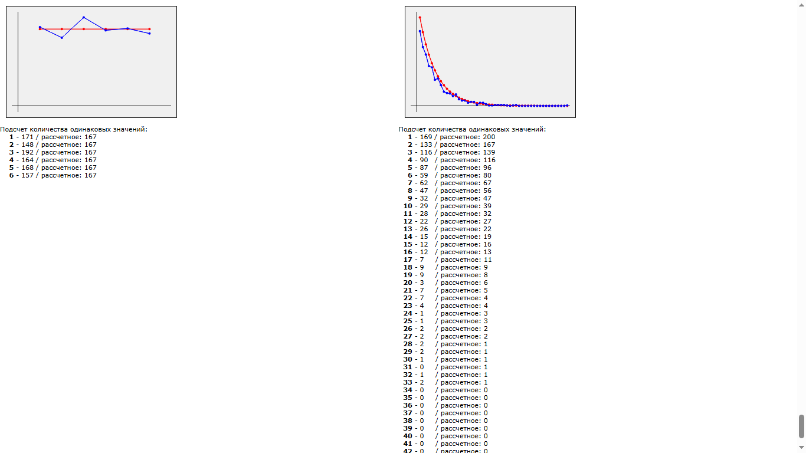

Навигатор по репозиторию

3. Статистика совпадения случайных событий
RandomSequrence/index-coincidences (part-2).html
Представлено "нормальное распределение" и "распределение совпадений".
Моделируется бросок кубика на загаданное число.
Как ведет себя случайность в динамике, растет или убывает от броска к броску?
Существует ли регулярность (периодичность) в выпадении случайных чисел?

4. Генерация созвездий
RandomSequrence/index-radial (part-3).html
Используется "генератор совпадений" для образования кучностей (сгущений) распределения случайных значений. Визуальное отображение работы генератора.